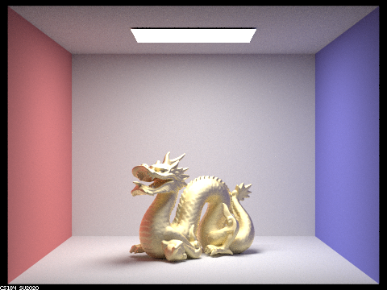
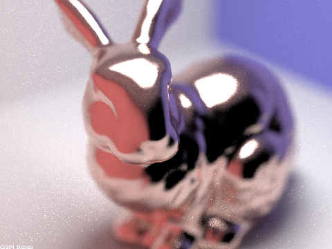
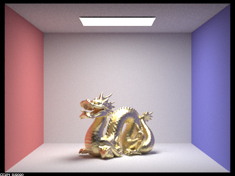
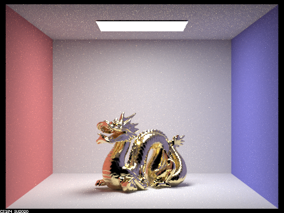
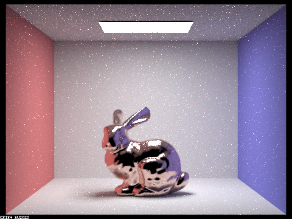
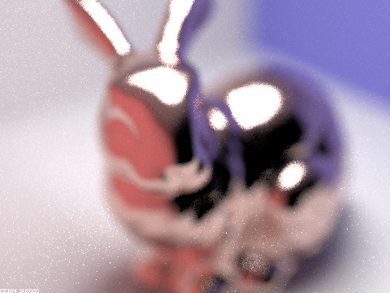
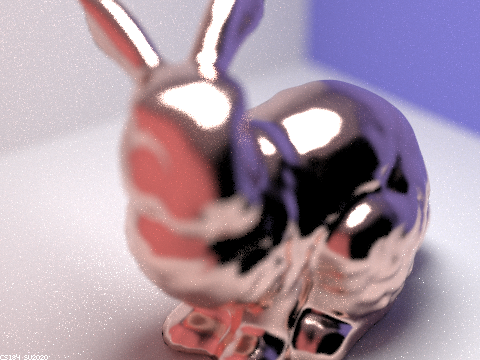
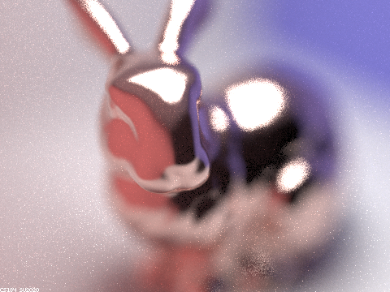
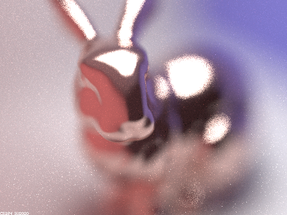

Overview
The path-tracing algorithm enables us to create a physically-based renderer with realistic results. In this homework, we implemented several advanced techniques, specifically the Microfacet model (Part 2) and the depth of field effect (Part 4). In the end, we are able to render more realistic images with effects.

\sky\CBdragon_microfacet_au.dae rendered with the microfacet model. |

\sky\CBbunny_microfacet_cu.dae rendered with the depth of field effect. |
Part 2: Microfacet Material
The microfacet model aims to represent materials as rough surfaces consisting of small, non-aligned microfacets, assuming each microfacet acts like a mirror. We implemented the Microfacet model by implementing the BDRF evaluation function MicrofacetBSDF::f(), the NDF function MicrofacetBSDF::D(), the Fresnel term function MicrofacetBSDF::F(), and the Microfacet importance sampling function MicrofacetBSDF::sample_f(). We followed the spec when implementing the formulae for \(f, D, F, p_\theta, p_\psi\).
Comparison between different \(\alpha\)
The parameter \(\alpha\) describes the roughness of the macro surface; larger \(\alpha\) leads to a more diffuse surface, while smaller \(\alpha\) gives the surface a shiny, reflective outlook. To compare the different effects with varying \(\alpha\), we modified CBdragon_microfacet_au.dae to let \(\alpha = 0.005, 0.05, 0.25, 0.5\), and then rendered with 256 samples per pixel, 4 samples per light and a max ray depth of 7. The command we run is: ./pathtracer -t 8 -s 256 -l 4 -m 7 -r 480 360 -f CBdragon.png ../dae/sky/CBdragon_microfacet_au.dae .
\sky\CBdragon_microfacet_au.dae rendered with 256 samples per pixel, 4 samples per light, a max ray depth of 7, and a roughness of 0.5. |

\sky\CBdragon_microfacet_au.dae rendered with a roughness of 0.25, ceteris paribus. |

\sky\CBdragon_microfacet_au.dae rendered with a roughness of 0.05, ceteris paribus. |

\sky\CBdragon_microfacet_au.dae rendered with a roughness of 0.005, ceteris paribus. |
We can observe that, with a roughness of 0.5, the surface is reflecting light but appears to be more diffuse, and no reflected details are shown on the surface. This is due to light reflecting into various directions as microfacets are not aligned. However, as \(\alpha\) becomes smaller, the macro surface becomes more glossy since it gets more smooth. The microfacets are more aligned, and the surface becomes more mirror-like, with specular reflection showing the details of the environment.
Comparison between cosine hemisphere sampling and importance sampling
In the default cosine hemisphere sampling, we sample rays according to a cosine-based pdf on the hemisphere; however, this distribution does not match with the Beckmann distribution used in our microfacet model. This results in a mismatch between the sampled ray direction and the ideal incident direction of the microfacets. Since the microfacets are assumed to be perfectly specular, the mismatched rays have a low chance to be reflected into the correct angles for rendering. This leads to the black dots on the object when the cosine hemisphere sampling is used. When we implement importance sampling using the NDF-like pdf pair, the rays are better aligned with the microfacets, hence leading to correct reflectance effects on the rendered image, as shown in our result.

\sky\CBbunny_microfacet_cu.dae rendered with 64 samples per pixel, 1 samples per light, a max ray depth of 5, using cosine hemisphere sampling. |

\sky\CBbunny_microfacet_cu.dae rendered using our Beckmann-based importance sampling, ceteris paribus. |
Another Conductor Material: Platinum
We decided to use Platinum as the other conductor material for rendering. According to the Reflective Index Database, Platinum has the following \(\eta\) and \(k\) for 614 nm (red), 549 nm (green) and 466 nm (blue):
$$\eta = 0.46138, 0.46608, 0.58870$$
$$k = 5.9022, 5.0942, 3.9742$$
We rendered CBdragon_microfacet_au.dae using Platinum's parameters, with 256 samples per pixel, 4 samples per light and a max ray depth of 7.
\sky\CBdragon_microfacet_au.dae rendered with 256 samples per pixel, 4 samples per light, a max ray depth of 7. The material is modified to resemble Platinum. Part 4: Depth of Field
In this part, we simulate a thin lens to enable the depth of field effect. To do so, we uniformly sample a disk area representing the lens, calculate the point in focus, and generate the ray that passes through the two points.
Pinhole model vs. Thin-lens model
Given an object in a scene, we want to capture the object on a plane. In the pinhole model, we place a barrier in between the scene plane and the image plane, but we leave a small pinhole (aperture) on the barrier. In the ideal case, for each point on the scene plane, we have one ray passing through the pinhole and matching one point on the image plane; all other rays originating from the point are blocked by the barrier. This model forms a clear image regardless of the distance between the pinhole and the object. However, in the thin-lens model, we have a thin lens in place of the barrier and the pinhole. Then, all rays can pass through the lens to reach the image plane. We assume that all rays originating from the same point on the focus plane are focused on the same point on the image plane, regardless of the direction of the ray. Thus, only the objects in close proximity to the focus plane are in focus; other objects will be out of focus. This leads to the depth of field effect.
Focus stack
To compare the different depth of field effects, we rendered CBbunny_microfacet_cu.dae using 4 different focal distances, with 256 samples per pixel, 4 samples per light, and a max ray depth of 7. We use a lens radius of 0.05, with the focal distances 1.2, 1.4, 1.6, and 1.8. We can easily see that the sharp part of the image is moving further away from the camera as the focal distance increases.

\sky\CBbunny_microfacet_cu.dae rendered with 256 samples per pixel, 4 samples per light, a max ray depth of 7, a lens radius of 0.05, and a focal distance of 1.2. The image is out of focus since the focus plane is in front of the bunny. |
\sky\CBbunny_microfacet_cu.dae rendered with a focal distance of 1.4, ceteris paribus. We can see the image is now focused on the top of the bunny's face. |
\sky\CBbunny_microfacet_cu.dae rendered with a focal distance of 1.6, ceteris paribus. The focal plane is now somewhere near the bunny's ears. |

\sky\CBbunny_microfacet_cu.dae rendered with a focal distance of 1.8, ceteris paribus. The focal plane is now near the rear of the bunny. |
Various Aperture Sizes
To compare different aperture sizes, we rendered CBbunny_microfacet_cu.dae using 4 different lens radius, with 256 samples per pixel, 4 samples per light, and a max ray depth of 7. We use a focal distance of 1.4, with the lens radius 0.05, 0.10, 0.15, and 0.20. We can observe that while the focused area remains mostly the same, other areas of the image become visibly blurrier as we increase the radius/aperture.
\sky\CBbunny_microfacet_cu.dae rendered with 256 samples per pixel, 4 samples per light, a max ray depth of 7, a focal distance of 1.4, and a lens radius of 0.05. |

\sky\CBbunny_microfacet_cu.dae rendered with a lens radius of 0.1, ceteris paribus. We can see the unfocused area of image is now visibly blurrier than before. |

\sky\CBbunny_microfacet_cu.dae rendered with a lens radius of 0.15, ceteris paribus. The unfocused area of image is more blurred, especially around the rear of the bunny. |

\sky\CBbunny_microfacet_cu.dae rendered with a lens radius of 0.2, ceteris paribus. The bottom part of the bunny becomes almost indistinguishable from the background. |